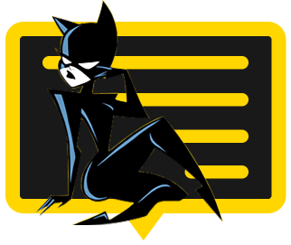

隱私權政策
本隱私條款說明當您使用我們的網站、手機應用程式或其他線上產品和服務（以下統稱為「服務」），或者當您以其他方式與我們互動時，您的資訊將如何被收集並使用於「CATR」。我們可能會隨時更改此隱私權條款，因此我們鼓勵您在使用服務時，隨時查看並了解我們最新的隱私權條款，以便幫助保護您的資訊隱私。
您所提供給我們的資訊
我們會收集您直接提供給我們的資訊。例如，我們會收集所有您創建帳戶時的資訊，以及使用服務來發送或接收的訊息（包含透過我們的服務「CATR」所拍攝的照片或影片，以及透過客服或與其他方式與我們溝通時所產生的訊息。）我們可能收集的資訊包含用戶名稱、帳戶密碼、電子郵件地址、電話號碼、年齡、性別以及任何您選擇提供的其他資訊。
我們誠心地建議您提供您擁有版權的內容（例如訊息、照片、影片、標題）。我們無法防範他人儲存您的內容（例如拍攝截圖），如果您不希望有心人士儲存您的某些內容，那麽您不應使用 CATR 發送該內容。
我們在您使用服務時所收集的資訊
當您使用我們的服務時，我們會自動收集您的以下資訊：
使用紀錄：當您透過我們的服務發送或接收訊息，我們會收集這些訊息資訊，包括時間、日期、發件人和收件人等資訊。我們還會收集您發送與接收的訊息數量，以及您較常傳送訊息的朋友名單。我們也會收集您使用我們的服務時的資訊，包含您的瀏覽器類型、語言、使用時間、IP 位址等。
裝置資訊：我們會收集您使用我們的服務時使用的裝置資訊，包括裝置類型、操作系統和版本、設備標識碼、電話號碼和行動網絡資訊。此外，本服務在經過您的同意之下，可取用您裝置中的電話簿和影像存儲應用程式，以方便支援您在使用本服務時的功能。 位置資訊：在經過您的同意之下，我們會收集有關您的裝置位置資訊，以方便支援您在使用本服務時的功能。
數據追蹤：我們會使用各種數據追蹤技術來收集資訊，來幫助我們來改進我們的服務和您的使用體驗。
我們從其他人取得的資訊
除了您直接提供給我們的資訊外，我們還會從其他人那裏獲得有關您的資訊，包括：
其他使用者
其他使用者可能在使用我們的服務時提供有關您的資訊。例如，如果其他使用者就您的事情與我們聯系，我們可能會從他們那裏收集有關您的資訊。
社群媒體
您可能會使用自己的社群媒體登入資訊（例如 Facebook 或 twitter 登入資訊）來建立和登入您的 CATR 帳號。因此您無須再記住另壹組使用者名稱和密碼，並可透過您的社群媒體帳號與我們分享壹些資訊。
其他合作夥伴
我們可能會從合作夥伴那裏取得有關您的資訊，例如，CATR 廣告刊登在合作夥伴的網站和平臺上（這種情況下，他們可能會將活動成功的詳細資訊傳遞給我們）。
我們如何使用資訊
我們使用您資訊的主要原因是為了提供和改善我們的服務。此外，我們使用您的資訊來維護您的安全，並提供您可能感興趣的廣告。請繼續閱讀有關我們使用您資訊的各項原因詳細說明，以及實際範例。
管理您的帳號，並提供我們的服務給您
建立和管理您的帳號
為您提供客戶支援，和回應您的要求
完成您的交易
就我們的服務（包括訂單管理和計費）與您溝通
確保跨裝置的壹致性體驗
將您使用的各種裝置連結起來，以便讓您在所有裝置上享受我們的服務，並獲得壹致性體驗。我們透過連結裝置和瀏覽器資料來提供壹致性體驗（例如當您在不同裝置上登入帳號時），或使用部分或完整的IP 位址、瀏覽器版本和有關您裝置的類似資料，來辨識和連結裝置。
為您提供新的 CATR 服務
讓您註冊新的 CATR 功能和 app，並顯示您的個人資料
在這些新功能和 app 中管理您的帳號
改善我們的服務和開發新服務
管理焦點團體和問卷調查
針對使用者行為進行研究和分析，以改善我們的服務和內容（例如，我們可能會決定變更外觀和感覺，或什至根據使用者行為，大幅修改特定功能）
開發新功能和服務（例如，我們可能會決定根據使用者的要求，進壹步建立壹個以興趣為依據的新功能）
防止、發現和打擊詐欺、其他非法或未經授權的活動
處理正在發生，或被指控的不當行為（無論是否發生在平臺上）
分析資料，以更加了解這類活動並制定對策
保留詐欺活動相關資料，以防止這類活動再次發生
確保法律遵從性
遵守法律要求
協助執法
執行或行使我們的權利，例如根據條款規定的權利
我們如何保護您的資訊
我們致力防止您的個人資訊遭未經授權的存取或變更、披露或銷毀。與所有科技公司壹樣，盡管我們采取措施保護您的資訊，但是我們無法承諾，而且您亦不應期望，您的個人資訊會始終安全無虞。
針對可能存在的漏洞和攻擊，我們定期監視我們的系統，並定期審查我們的資訊收集、儲存和處理做法，以更新我們的實體、技術和組織安全措施。
如果我們懷疑或發現任何違反安全的行為，我們可以暫停您使用所有或部分服務，恕不另行通知。如果您認為您的帳號或資訊不再安全，請立即通知我們。
兒童的隱私
我們的服務僅限 18 歲（含）以上的使用者使用。我們不允許 18 歲以下的使用者使用我們的平臺，而且我們不會在知情的情況下收集 18 歲以下人士的個人資訊。如果您懷疑任何使用者的年齡低於 18 歲，請透過服務提供的通報機制，向我們通報此疑慮。
其他
帳戶資訊
您可以在 app 中編輯您的帳號設定，更新您的個人資訊。如您有任何問題，請在 catr@mycat1314.im 與我們聯系。
推播通知
CATR 會發送推播通知或系統提醒到您的裝置。您可以在您的裝置設定中更改通知設定 (iOS)，或者透過 app 更改通知設定 (Android)。
本公司提供活動資訊通知之服務（包括但不限於以推播、簡訊或電子郵件之方式不定期發送活動資訊）。若您不希望收到任何活動資訊，可隨時聯系本公司客服，本公司客服將協助您取消活動資訊通知之設定。